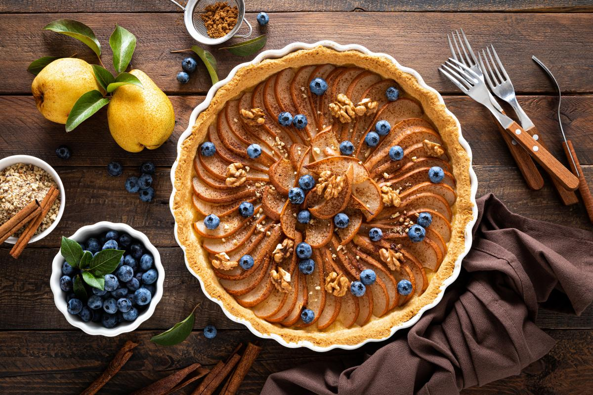

Ingridients
- Груши - 300 г.
- Яйца - 3 шт.
- Мука пшеничная - 1 стакан объёмом 200 мл.
- Сахар - 180 г.
Включить духовку и разогреть ее до 180°C. Груши вымыть, вытереть насухо, удалить сердцевину. Нарезать фрукт полукружочками, форму для запекания застелить пергаментом. Выложить на нее груши. В глубокую емкость вбить яйца, насыпать сахар, соль и мускатный орех. Миксером на высокой скорости взбить ингредиенты до образования густой пены. В яично-сахарную массу просеять муку, аккуратно перемешать деревянной лопаткой. Вылить тесто сверху на груши, отправить в духовку на 30 минут.